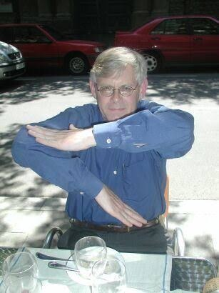
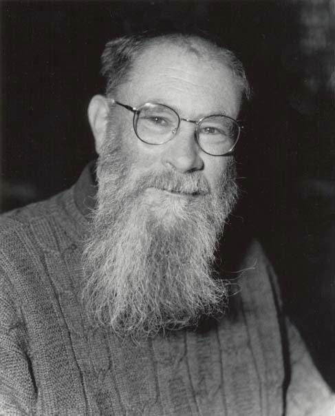
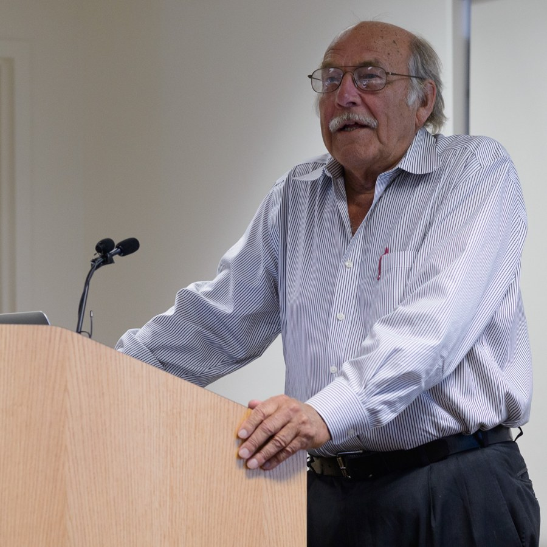
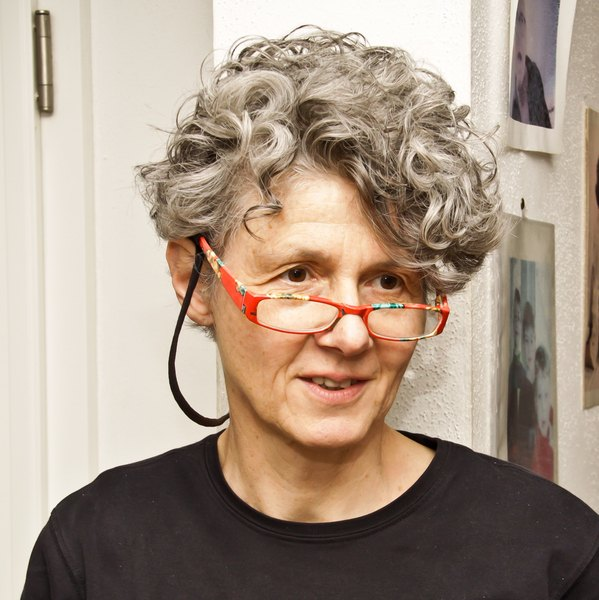
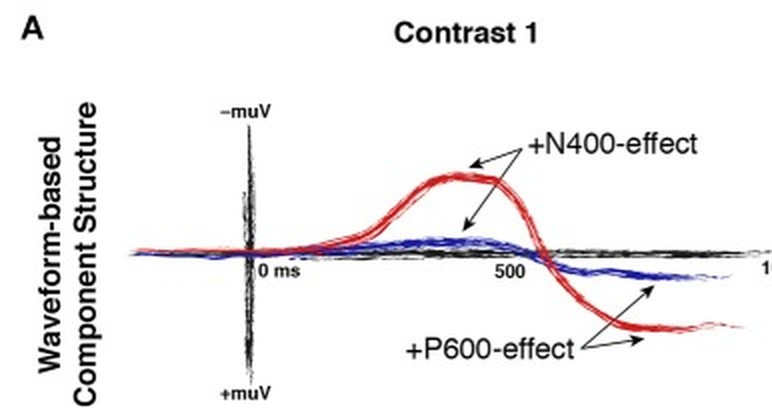

A
pronouns, too
ha'e '3rd person', avei 'too'
Anoushka is a mountain guide. The local university has sent the six faculty members of its logic department on a beginners’ mountaineering course. This is deeply frustrating for Anoushka because, although they are all perfect logicians, they are novice climbers.
One important skill for any climber is tying the knot that attaches them to the rope. It is often hard to check your own knot, because it sits under your jacket, but easy to see other climbers’ knots, so climbers often check each other’s.
Anoushka teaches the six logicians to tie a figure-of-eight knot and asks them each to tie one. She then gathers them round to see whether they have done it correctly. Each logician can see every other logician’s knot, but not their own. Anoushka notices, to her frustration, that not all of the knots are right. She shakes her head and announces: “Well, at least one of you hasn’t tied your knot correctly. Without looking at your own knot, raise your hand if you know that your knot is tied incorrectly.” The logicians look around at each other and all shake their heads. “How about now?” says Anoushka. Again they look around despondently. “How about now?” she asks a third time, and suddenly some of the logicians raise their hands.
How many logicians had tied their knots correctly? Justify your answer.




